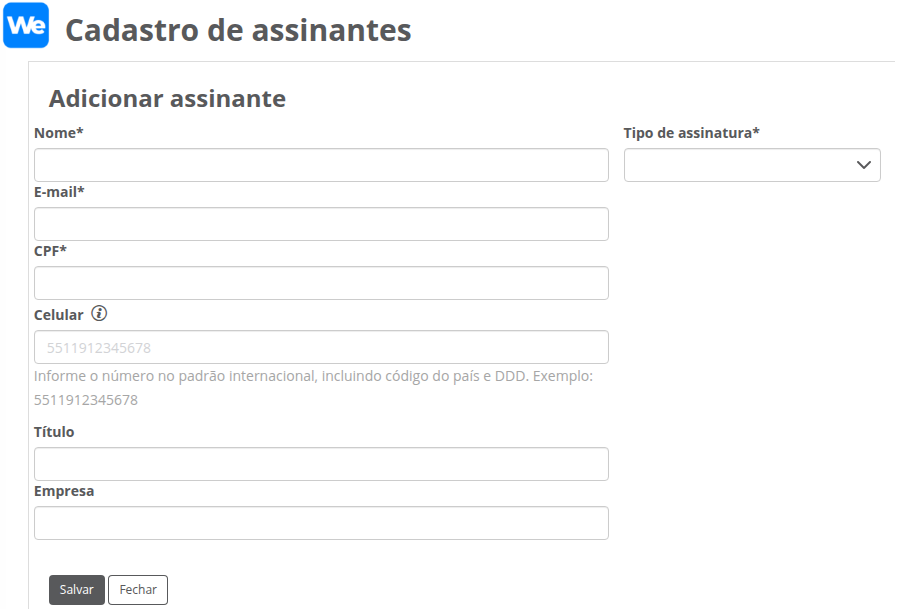
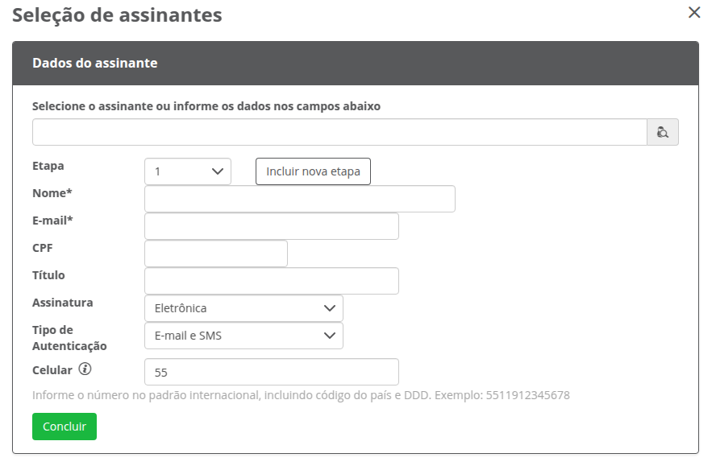
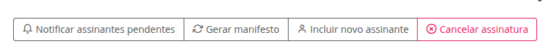
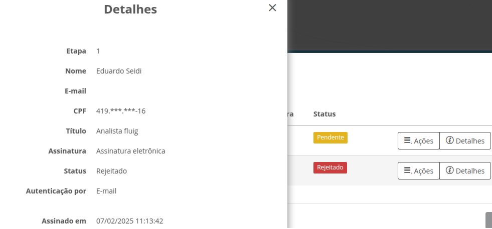
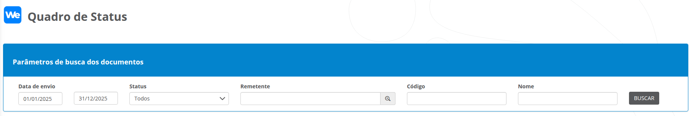

Versão 3.2 Versão atual
Foram adicionadas novas funcionalidades no envio de documentos além de correções minoritárias em mensagens utilizadas no app.
Cadastro de Assinantes
Criação de novo campo Celular para armazenar o número de celular do assinante. O número deve ser informado no padrão internacional, incluindo o código do país e o número do celular.
Cada país adota seu próprio padrão de número de celular, então verifique com o remetente antes de seu cadastro.
O número de celular será utilizado no envio do documento quando o remetente optar por utilizar um tipo de autenticação (nova funcionalidade descrita em Portal de Assinaturas) que utilize o número de celular.
Exemplo
Para um número de celular de São Paulo, deve ser informado 5511999999999, onde:
- 55: código do país;
- 11: DDD do estado;
- 999999999: número de celular

Portal de Assinaturas
De forma padrão, o remetente do documento passa a receber a notificação por e-mail de conclusão do documento enviado para assinatura.
Inclusa nova funcionalidade no envio de documentos. Agora é possível informar o tipo de autenticação para assinaturas eletrônicas. Essa funcionalidade garante maior segurança no processo de assinatura eletrônica, evitando que o documento possa ser assinado por outra pessoa que tenha obtido acesso ao link de assinatura do assinante.
Os tipos de autenticação disponíveis são:
- E-mail: Recebimento da solicitação de assinatura por e-mail, permitindo que a assinatura seja realizada diretamente no e-mail recebido.
- E-mail e SMS:: Permite que a assinatura seja realizada diretamente no e-mail recebido, além de exigir uma confirmação com código via SMS.
- SMS: A confirmação da assinatura é autenticada diretamente por meio do SMS.
- E-mail e WhatsApp: Permite que a assinatura seja realizada diretamente no e-mail recebido, além de exigir uma confirmação com código via WhatsApp.
- WhatsApp: Recebimento do link de assinatura diretamente pelo WhatsApp. A confirmação da assinatura é autenticada diretamente no WhatsApp.
- E-mail e Aplicativo Autenticador (Google Authenticator): Permite que a assinatura seja realizada diretamente no e-mail recebido, além de exigir uma confirmação com código via aplicativo autenticador (Google Authenticator).
- E-mail e Selfie: Permite que a assinatura seja realizada diretamente no e-mail recebido. A assinatura eletrônica só poderá prosseguir após a habilitação da câmera para tirar uma selfie. Caso a câmera não seja habilitada, o participante só poderá continuar a assinatura utilizando o certificado digital.
- E-mail e PIX: Permite que a assinatura seja realizada diretamente no e-mail recebido, com solicitação de um segundo fator via PIX para confirmação. Será cobrado um valor simbólico para a confirmação, que será estornado após a autenticação.
Com a inclusão dos tipos de autenticação, quando selecionada uma opção que utilize um número de celular (por exemplo: autenticação por e-mail e SMS, e-mail e Whatsapp), é necessário informar o número do celular do assinante. O número deve ser informado no padrão internacional, incluindo o código do país e o número do celular.
De forma padrão, caso o participante não possua um número de celular cadastrado, já é preenchido automaticamente o código 55 (código do Brasil), sendo necessário o preenchimento do DDD e número do celular.

Quadro de Status
Quando os documentos não são integrados com o Portal Wesign por algum motivo, os documentos permanecem com o status de Enviando, onde é possível realizar a correção do erro e realizar uma nova tentativa de integração, sem a necessidade de realizar um novo envio do documento.
Agora é possível realizar o cancelamento em lotes dos documentos desejados, sem a necessidade de realizar o cancelamento individualmente.
Para os documentos que já foram assinados e estão com status de Assinado, é possível realizar o download do manifesto dos documentos selecionados.
O download do manifesto só é permitido para os usuários que possuam acesso ao documento original publicado no TOTVS fluig, ou seja, se o usuário não possui acesso ao documento via Documentos (GED), ele não poderá realizar o download do manifesto.
São duas opções de manifesto disponíveis:
- Manifesto completo (.zip): essa opção faz o download do arquivo original publicado no fluig juntamente com o anexo atrelado à este documento;
- Arquivo assinado (.pdf): essa opção faz o download em tempo de execução do manifesto diretamente do Portal de Assinaturas.
É possível executar a verificação do documento Pendente em tempo de real e realizar a geração do manifesto (quando o documento estiver completamente assinado).
A opção só estará disponível para o usuário remetente do documento ou usuários administradores do fluig.

Inclusa nova funcionalidade ao visualizar os assinantes do documento. No botão Detalhes irá exibir as informações do participante de forma resumida.

Alteração de layout Parâmetros de busca dos documentos
O layout dos Parâmetros de busca dos documentos foi alterado para facilitar a utilização do usuário. O funcionamento permanece o mesmo.
